Introduction
Ce rapport accompagne le relevé d'audit effectué sur le site « Luxembourg - Police Grand-Ducale ».
La méthodologie d'audit employée repose sur le référentiel RGAA 4, consultable à l'adresse suivante : https://accessibilite.public.lu/fr/rgaa4/criteres.html
L'audit a été réalisé au moyen de l'utilisation de navigateurs web et d'outils spécialisés. Des tests de restitution ont également été effectués conformément à la base de référence définie par le RGAA 4.
Échantillon
L'audit a porté sur un échantillon de 15 pages pour le niveau double A (AA) :
Environnement de test (base de référence)
Quelques critères RGAA, notamment ceux de la thématique JavaScript, incluent des tests de restitution à effectuer sur des technologies d'assistance associées à des navigateurs et des systèmes d'exploitation. Pour qu'un dispositif HTML / WAI-ARIA ou son alternative soit considéré comme compatible avec l'accessibilité, il faut qu'il soit pleinement fonctionnel, en termes de restitution et de fonctionnalités sur certaines combinaisons. Vous trouverez une explication détaillée de cet environnement de tests dans le document du RGAA 4.
Nous détaillons ci-dessous la base de référence utilisée pour réaliser les tests de restitution des composants du site.
Environnement de test – ordinateur
| Technologie d'assistance | Navigateur |
|---|---|
| NVDA 2020.4 | Firefox 89 |
| JAWS 2021 | Internet Explorer 11 |
| VoiceOver 11.4 | Safari 14.1 |
Environnement de test — mobile
| Système d'exploitation | Technologie d'assistance | Navigateur |
|---|---|---|
| Android 11 | TalkBack (dernière version) | Chrome 91 |
Accessibilité des pages auditées
Le site présente un niveau général d'accessibilité bon.
Le niveau moyen de conformité relevé atteint 62,30 % de conformité sur l'ensemble des pages auditées, avec 58,14 % de conformité au niveau simple A (A) et 72,22 % de conformité des critères de niveau double A (AA).
Le site est partiellement conforme.
Conformité RGAA 4 du site
| Conforme | Non conforme | |
|---|---|---|
| A | 58,14% | 41,86% |
| AA (légal) | 62,30% | 37,70% |
Note sur le calcul de conformité
La conformité globale (Tableau « Conformité RGAA 4 ») est calculée de la manière suivante : C / (C+NC). C est le nombre de critères conformes et NC le nombre de critères non conformes.
C'est ce nombre qui constitue la référence légale. Il représente le taux de conformité de l'échantillon.
Il est normal que le taux de conformité global diffère sensiblement du taux de conformité par page. En effet, un critère NC (non conforme) sur une page rend le critère non conforme sur l'ensemble de l'échantillon.
Pour qu'un site soit conforme (100 % des critères applicables sont conformes au niveau AA), il est nécessaire que le taux de conformité par page équivaille à 100 %.
Conformité pour chaque niveau
| Conforme | Non conforme | |
|---|---|---|
| A | 58,14% | 41,86% |
| AA (légal) | 72,22% | 27,78% |
Moyenne par pages
| Nº page | Titre de la page | %C |
|---|---|---|
| P01 | Accueil | 77,50% |
| P02 | Contact | 82,61% |
| P03 | Mention légales | 90,63% |
| P04 | Accessibilité | 93,55% |
| P05 | Plan du site | 90,63% |
| P06 | Aide | 93,33% |
| P07 | Recherche | 76,32% |
| P08 | Actualité "Accident A1 Senningerberg" | 100,00% |
| P09 | Sous rubrique "Votre police" | 93,94% |
| P10 | Contenu "À propos de la police" | 100,00% |
| P11 | Trouver un commissariat | 93,94% |
| P12 | Détail d'un commissariat | 91,18% |
| P13 | Départ en vacance | 100,00% |
| P14 | Recrutement | 83,87% |
| P15 | FAQ recrutement | 86,49% |
Moyenne par thématiques
| Thématiques | C | NC |
|---|---|---|
| Images | 0,00% | 100,00% |
| Cadres | 0,00% | 100,00% |
| Couleurs | 0,00% | 100,00% |
| Multimédia | 66,67% | 33,33% |
| Tableaux | 100,00% | 00,00% |
| Liens | 50,00% | 50,00% |
| Script | 50,00% | 50,00% |
| Eléments obligatoires | 55,56% | 44,44% |
| Structuration | 33,33% | 66,44% |
| Présentation | 75,00% | 25,00% |
| Formulaires | 66,67% | 33,33% |
| Navigation | 77,78% | 22,22% |
| Consultation | 100,00% | 00,00% |
Impacts utilisateurs
Les principales personnes impactées sont les personnes aveugles et celles qui naviguent au clavier. Les problèmes liés aux scripts, à l'API ARIA, aux formulaires et aux contenus apparaissant au survol rendent parfois difficile l'utilisation du site par ces utilisateurs. Les utilisateurs malvoyants seront impactés par les problèmes de contraste du site.
Contenus dérogés
La dérogation est un moyen d'exclure du champ d'application du référentiel des contenus particuliers. Les cas de dérogations sont très encadrés, vous en trouverez le détail dans le guide des dérogations.
Les contenus suivants n'entrent pas dans le calcul de la conformité ni dans le périmètre des éléments à rendre accessible, ils sont dérogés :
- Page 1, « Page d'accueil », le carrousel d'actualité n'est pas accessible. Il mène à des actualités qui peuvent être accessibles par la page actualité.
- Page 1, « Page d'accueil », les sous-menus de navigation n'est pas accessible au clavier. Le premier niveau de navigation est accessible, il conduit à des pages portails qui reprennent le contenu de la sous-navigation.
- Page 11, « Trouver un commissariat », le contenu cartographique est dérogé. L'information est accessible via la liste des commissariats.
- Page 12, « Détail d'un commissariat », le contenu cartographique est dérogé. L'adresse du commissariat est accessible via le contenu textuel.
- Page 14, « Recrutement », le contenu vidéo « campagne recrutement Police Lëtzebuerg » est dérogé au titre de contenu vidéo publié avant le 23/09/2020 (le 29/04/2019).
Droit à la compensation
Les dérogations émises notamment pour charge disproportionnée demandent en contrepartie la mise en place d'un moyen de compensation pour les utilisateurs. Pour les documents bureautiques par exemple, vous devez fournir un moyen à l'utilisateur de demander une version accessible d'un document s'il en a besoin. Cela peut être un mail ou un formulaire de contact.
Note sur le relevé des non-conformités
Ne sont cités dans ce rapport que quelques exemples issus du relevé des non-conformités.
De plus, toutes les occurrences d'une non-conformité ne sont pas listées dans le relevé. Par exemple : "le texte de la navigation en blanc sur bleu a un contraste de 1.97 au lieu de 4.5", le relevé mentionne quelques occurrences, mais ne les cite pas tous.
Avis
Le site «Police Grand-Ducale» repose sur de bonnes connaissances HTML et possède de bonnes bases d'accessibilité, d'où son taux proche des 60%. Cependant, même si le site comporte peu de scripts, les modèles de conception ARIA ne sont pas totalement respectés. Ces non-conformités seront une gêne importante pour les utilisateurs aveugle et clavier. Nous notons également de multiples non-conformités sur les formulaires, et la structure des pages.
Les non-conformités les plus bloquantes pour les utilisateurs concernent :
- Les scripts
- Les formulaires
- La structuration de la page
Ce sont donc ces points qui devront nécessiter une attention toute particulière et qui demanderont le plus d'efforts.
Annexe technique
Images
Recommandation
Donner à chaque image porteuse d'information une alternative textuelle pertinente et une description détaillée si nécessaire. Lier les légendes à leurs images. Remplacer les images textes par du texte stylé lorsque c'est possible.
Images de décoration
Le site contient des images de décoration qui ne sont pas correctement identifiées, soit parce qu'elles ont une alternative renseignée soit parce qu'il manque les attributs nécessaires pour qu'elles soient ignorées par les technologies d'assistance.
Ces images n'apportent aucune information et peuvent causer des problèmes de compréhension pour les aveugles et les grands malvoyants qui vont écouter les contenus avec un lecteur d'écran.
- Dans le cas d'une image insérée avec la balise
img, mettre unalt="". - Dans le cas d'une image insérée avec la balise
svg, mettre une propriété ARIAaria-hidden="true".
Constats sur le site
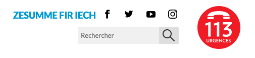Dans l'entête, les images SVG « facebook », « twitter », « instagram », « youtube » sont décoratives, mais restent accessibles aux technologies d'assistance. Pour les masquer, utiliser la propriété aria-hidden="true".
Images textes
Lorsque des images textes peuvent être reproduites en HTML et CSS, vous ne devez pas utiliser d'images.
Les textes doivent être réalisés en HTML et CSS afin de permettre aux utilisateurs qui en ont besoin d'adapter leur lisibilité (agrandissement des caractères, modification des couleurs, des polices…).
Il est également possible de conserver les images textes et de fournir à l'utilisateur un mécanisme de remplacement qui lui permet, avec un bouton par exemple, de remplacer toutes les images textes en textes stylés.
Constats sur le site
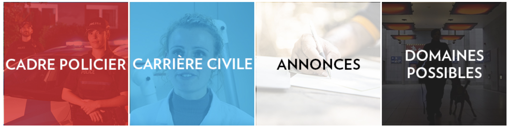Sur la page « Recrutement », 4 liens images contiennent un texte qui peut être intégré en HTML/CSS :
- « Cadre policier » ;
- « Carrière civile » ;
- « Annonces » ;
- « Domaines possibles » ;
Cadres
L'absence d'identification des cadres peut poser un problème de repérage dans la structure de la page ou de compréhension des contenus pour les personnes aveugles.
Constats sur le site
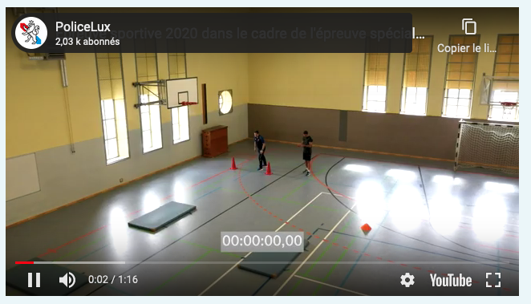Sur la page « FAQ Recrutement », l'iFrame du lecteur vidéo YouTube n'a pas de titre.
Couleurs
Recommandation
Ne pas donner l'information uniquement par la couleur et utiliser des contrastes de couleurs suffisamment élevés pour les textes et les composants d'interface.
Contrastes des textes
Plusieurs couleurs présentent un rapport de contraste insuffisant, ce qui peut poser problème aux grands malvoyants et aux déficients visuels qui ont des difficultés à percevoir les couleurs ou les contrastes.
Rapports de contrastes définis par le RGAA
- Pour les textes qui ont une taille de police calculée inférieure à 24px sans effet de graisse ou une taille de police calculée inférieure à 18,5px avec effet de graisse, le rapport de contraste entre la couleur du texte (y compris le texte en image) et son arrière-plan doit être de 4.5:1, au moins.
- Pour les textes qui ont une taille de police calculée supérieure ou égale à 24px sans effet de graisse ou une taille de police calculée supérieure ou égale à 18,5px avec effet de graisse, le rapport de contraste entre la couleur du texte (y compris le texte en image) et son arrière-plan doit être de 3:1, au moins.
Vous pouvez foncer les couleurs pour obtenir le rapport de contraste exigé.
Si la charte graphique ne peut être modifiée, fournissez une méthode aux utilisateurs pour consulter le site avec des contrastes suffisants. Ceci peut être réalisé simplement avec une fonctionnalité JavaScript et une surcharge CSS des couleurs.
Vous pouvez voir un exemple de ce type de mécanisme sur le site sncf.com. Dans les réglages d'accessibilité, vous trouverez une option qui permet d'afficher le site avec des contrastes renforcés et inversés.
Constats sur le site
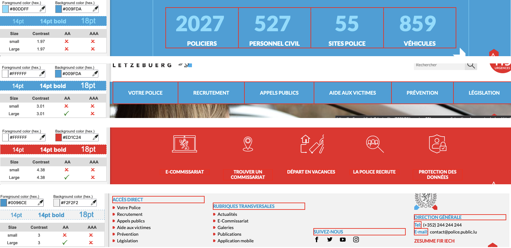Exemple sur la page d'accueil :
- le texte large des chiffres clés (ex : 2027 policiers, 527 personnes civiles...) en bleu ciel sur bleu, a un contraste de 1.97 au lieu de 3
- le texte de la navigation en blanc sur bleu a un contraste de 1.97 au lieu de 4.5
- le texte du bandeau d'accès rapide, en blanc sur rouge, a un contraste de 4.38 au lieu de 4.5
- le texte des titres des listes de liens dans le pied de page, en bleu sur gris, a un contraste de 3 au lieu de 4.5
Contraste des composants d'interface
Les composants d'interface, les illustrations porteuses d'information ou encore les mises en couleurs porteuses d'information doivent être suffisamment contrastés pour être perçus par les utilisateurs ayant des troubles de perception des couleurs. Par exemple, une icône porteuse d'information devra avoir un rapport de contraste avec la couleur de fond de 3. De même, pour un champ de saisie de formulaire, dont la zone active est matérialisée par sa bordure, alors la couleur de cette bordure devra avoir un rapport de contraste de 3 avec la couleur de fond de la page.
Constats sur le site
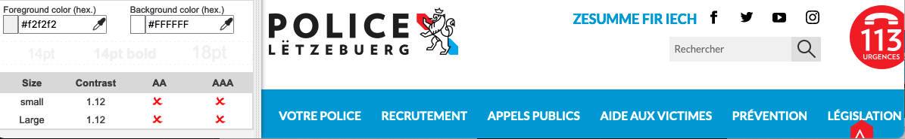Exemple sur la page d'accueil :
- Le champ de recherche dans l'entête principal, en gris sur fond blanc a un contraste de 1.12 au lieu de 3
Multimédia
Recommandation
Donner si nécessaire à chaque média temporel une transcription textuelle, des sous-titres synchronisés et une audiodescription synchronisée pertinents. Donner à chaque média non temporel une alternative textuelle pertinente. Rendre possible le contrôle de la consultation de chaque média temporel et non temporel au clavier et s'assurer de leur compatibilité avec les technologies d'assistance.
Transcription textuelle
Les vidéos présentes sur le site ne disposent pas de transcription textuelle. Il s'agit d'un impact majeur d'accessibilité. En effet, la transcription textuelle est utile pour différents types d'utilisateurs (aveugles, malvoyants, sourds, malentendants, handicapés moteurs, handicapés cognitifs).
Cette transcription doit être un fichier structuré (docx, HTML) qui reprend toutes les informations présentes (visuelles et sonores) dans la vidéo.
Cette transcription peut être située :
- soit sur la même page que la vidéo ;
- soit ailleurs sur le site. Dans ce cas, ajouter alors un lien vers la transcription sous la vidéo par exemple.
Constats sur le site
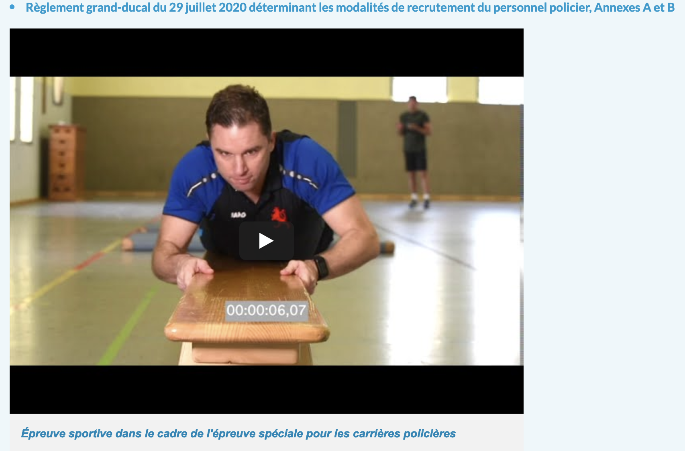Sur la page « FAQ recrutement », les informations de la vidéo "Épreuve sportive dans le cadre de l'épreuve spéciale pour les carrières policières" sont contenues dans le lien "Règlement grand-ducal du 29 juillet 2020 déterminant les modalités de recrutement du personnel policier, Annexes A et B" mais ceci n'est pas indiqué explicitement.
Liens
Recommandation :
Donner des intitulés de lien explicites, grâce à des informations de contexte notamment, utiliser le titre de lien le moins possible. S'assurer que le nom visible est contenu dans le nom accessible.
Pertinence des intitulés
Un lien possède généralement un intitulé et un contexte. L'intitulé est le texte présent dans la balise <a> (ou la valeur de l'attribut alt de l'image dans le cas d'un lien-image) et le contexte du lien est représenté par le titre qui précède, le titre du lien (l'infobulle) ou tout simplement le texte dans lequel il est inséré.
Pour être considéré comme pertinent, l'intitulé d'un lien doit permettre de comprendre sa destination en prenant en compte son contexte.
Constats sur le site
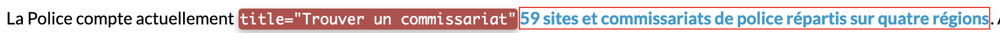Sur la page « votre police », dans la phrase « La Police compte actuellement 59 sites et commissariats de police répartis sur quatre régions », le lien « 59 sites et commissariats de police répartis sur quatre régions » a pour attribut title="Trouver un commissariat" qui ne reprend pas l'intitulé visible du lien.
Scripts
Recommandation :
Donner si nécessaire à chaque script une alternative pertinente. Rendre possible le contrôle de chaque code script au moins par le clavier et la souris et s'assurer de leur compatibilité avec les technologies d'assistance. Identifier les messages de statut lorsque c'est nécessaire.
Fenêtres modales
Le site contient des fenêtres modales qui n'implémentent pas ou mal le modèle de conception ARIA dialog. Ces fenêtres doivent être titrées, le focus doit être possible à l’intérieur tout comme la possibilité de les quitter via le clavier. Sans cela, les utilisateurs navigants via un lecteur d’écran se retrouver bloqué sur la modale et/ou ne seront pas informé de son ouverture.
Une bonne méthode est d’implémenter ou de s’inspirer du modèle de conception ARIA dialog comme décrit par le W3C.
Constats sur le site
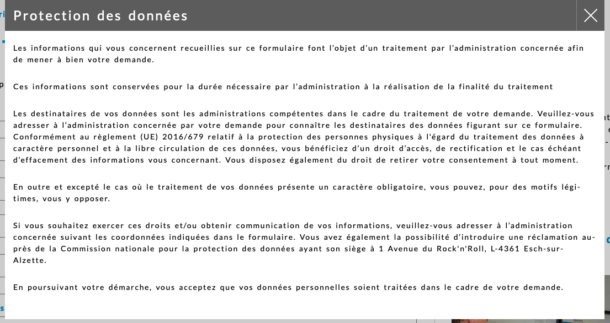Dans la page contact, la fenêtre modale "Protection des données" implémente partiellement le motif ARIA Dialog.
Gestion de la visibilité de zones
Le site possède des fonctionnalités d'affichage ou de masquage des zones de contenus. L'état affiché/masqué du contenu additionnel doit pouvoir être disponible pour les technologies d'assistance afin que les utilisateurs aveugles accèdent à cet état.
Pour ce type d’élément, l’implémentation du motif ARIA Disclosure est recommandée.
Constats sur le site
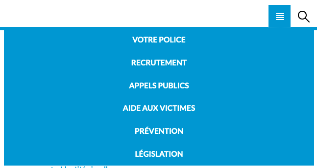Exemple sur la page d'accueil, en RWD :
- le menu principal ainsi que la recherche principale n'implémente pas correctement le motif de conception d'ARIA Disclosure
Éléments obligatoires
Recommandation
Vérifier que chaque page web a un code valide selon le type de document, un titre pertinent et une indication de langue par défaut. Vérifier que les balises ne sont pas utilisées uniquement à des fins de présentation, que les changements de langues et de direction de sens de lecture sont indiqués.
Titre de la page
Le titre de la page (visible dans l'onglet du navigateur) est un élément de repère dans le site web. Pour les utilisateurs de lecteur d'écran (utilisateurs aveugles ou grands malvoyants), c'est le premier élément restitué par le lecteur d'écran au chargement de la page. Cela permet de donner du contexte aux utilisateurs qui n'ont pas une vision globale de la page. Pour les utilisateurs avec des troubles de la mémoire, c'est l'information à laquelle ils accèdent lorsqu'ils naviguent avec l'historique de navigation du navigateur. Il est donc essentiel d'avoir des titres de pages pertinents, concis et très souvent uniques dans le site, et qui reflètent de la position de l'utilisateur dans le site web.
Il est des cas particuliers, comme les pages dont le contenu est une liste de résultats paginés (ex. : les résultats de recherche), pour lesquels le titre doit refléter la nature de la recherche ainsi que le numéro de page en cours de consultation.
Constats sur le site
Sur la page de recherche, le titre de la page est <title>Recherche - Rubriques de support - Portail de la Police Grand-Ducale -
Luxembourg</title>. Sur la page de recherche, le titre de la page doit en plus contenir le(s) terme(s) recherché(s) ainsi que le numéro de la page courante. Il peut également indiquer le nombre de résultats.
Indication de langue
Les lecteurs d'écran utilisent les indications de langue pour vocaliser le contenu dans la langue définie. La page doit contenir une définition de langue principale (généralement sur l'élément html).
Ensuite, les éléments de langue étrangère présents dans le contenu doivent être signalés. Si dans la page, on trouve des termes absents du dictionnaire de la langue principale de la page, il faut les identifier afin que le lecteur d'écran les restitue dans la langue appropriée. En effet, une mauvaise prononciation pourrait mener à des incompréhensions pour les utilisateurs qui reposent uniquement sur des restitutions orales. Les noms propres sont exclus de cette obligation.
Constats sur le site
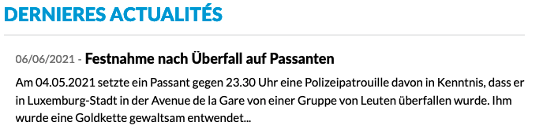Sur la page d'accueil, de nombreux textes sont en luxembourgeois. Ils doivent être indiqués par un attribut lang="lb"
Exemple dans la section « Dernières actualités » :
06/06/2021 -Festnahme nach Überfall auf Passanten
"Am 04.05.2021 setzte ein Passant gegen 23.30 Uhr eine Polizeipatrouille davon in Kenntnis, dass er in Luxemburg-Stadt in der Avenue de la Gare von einer Gruppe von Leuten überfallen wurde. Ihm wurde eine Goldkette gewaltsam entwendet..."
Validité du code
Les technologies d'assistance, comme les lecteurs d'écran ou les systèmes de contrôle à la voix, s'appuient sur le code des pages pour générer les restitutions et les interactions avec l'utilisateur. Un lecteur d'écran va exploiter le code HTML fourni par le navigateur et les informations accessibles au moyen des API d'accessibilité du système.
Si le code comporte des erreurs (balises mal fermées par exemple), il y a un risque que les fonctionnalités du lecteur d'écran soient impactées, comme la navigation de lien en lien par exemple.
Pour vérifier la conformité d'une page, vous pouvez utiliser le validateur mis à disposition par le W3C.
Constats sur le site
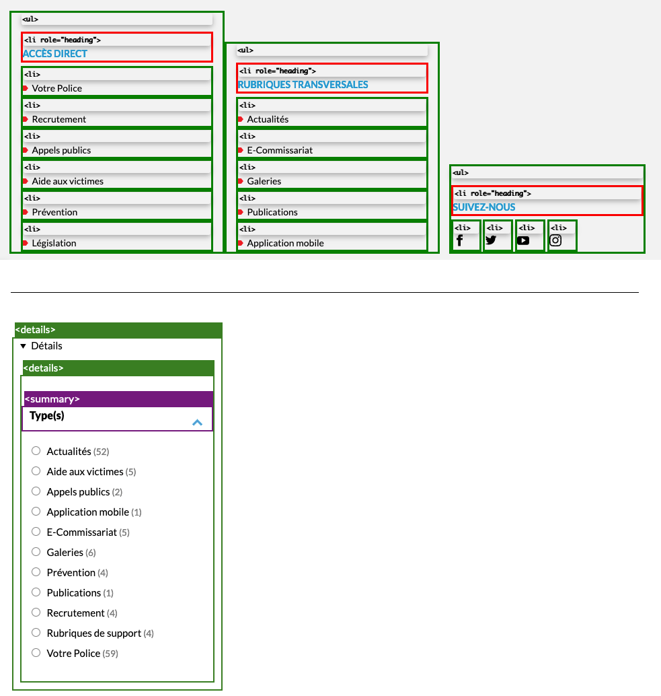Le site comporte plusieurs erreurs de code, exemple :
- Dans l'entête du site, l'image « phone-113-urgence.png » a un attribut
aria-descriptionce qui n'est pas autorisé sur un élément<img> - Dans le pied de page, le premier élément
<li>des listes de liens rapides (exemple « Accès Direct ») a un attributrole="heading"ce qui n'est pas autorisé. Sortir le titre de la liste et utiliser une balise de titrage. - Le lien de haut de page cible un
id="top"qui n'existe pas. - Sur la page de recherche, les filtres utilisent des balises
<details>et<summary>imbriquées. Une balise<details>doit toujours avoir comme descendant direct une balise<summary>/
Balises utilisées à des fins de présentation
Les éléments de structure HTML ont chacun une sémantique particulière (paragraphe, titre, image, lien, etc.). Si les éléments sont mal employés (détournés de leur utilité première), cela peut poser des problèmes aux utilisateurs qui naviguent à l'aide d'une technologie d'assistance (lecteur d'écran, plug-in…). En effet, les technologies d'assistance disposent de raccourcis permettant de naviguer rapidement entre certains types d'éléments (paragraphes, titres, listes, etc.). Si ces éléments sont mal employés, les utilisateurs ne peuvent pas utiliser ces fonctionnalités de repère et de navigation dans le contenu.
Constats sur le site
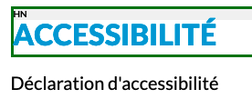Dans la page « accessibilité », le texte « Déclaration d'accessibilité » n'est structuré qu'avec des <div>.
Structuration de l'information
Recommandation
Utiliser des titres, des listes, des abréviations et des citations pour structurer l'information. S'assurer que la structure du document est cohérente.
Titres
Le titrage des contenus est une étape importante dans la structuration des contenus. Cela répond à deux besoins :
- identifier rapidement un contenu recherché ;
- naviguer rapidement dans le contenu en se déplaçant de titre en titre.
Un titrage correct fournit à l'utilisateur de lecteur d'écran un plan du document et lui permet de naviguer de titre en titre pour se déplacer plus rapidement dans le contenu de la page.
Pour valider la structure de votre page, vous pouvez utiliser l'extension Firefox HeadingsMap. Lorsque l'extension est active, sélectionnez l'onglet « Headings » et vérifiez la cohérence et l'imbrication des titres.
Constats sur le site
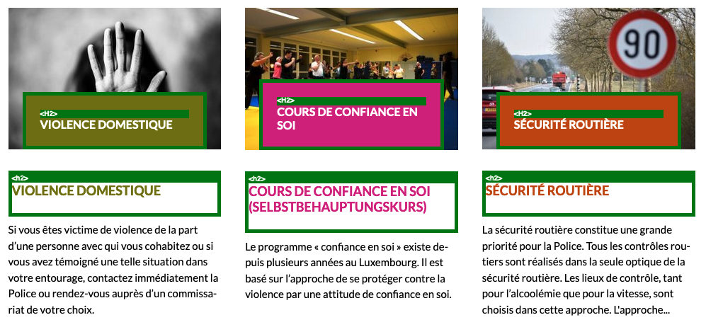Sur la page d'accueil, les titres sont redondants (exemple : les titres de niveau 2 « violence domestique », « Cours de confiance en soi », « Sécurité routière »).
Structure du document
L'utilisation correcte des balises HTML5 et des landmarks ARIA va permettre d'enrichir la restitution pour les utilisateurs aveugles qui ne perçoivent pas les mises en forme : la navigation principale ne sera plus perçue simplement comme une liste de liens, elle sera restituée à l'utilisateur comme un élément de navigation, par l'intermédiaire du lecteur d'écran qui annoncera « région » ou « repère ».
De plus, ces marqueurs sémantiques vont également constituer des éléments de navigation rapide dans la page. Grâce à un raccourci clavier, certains utilisateurs vont pouvoir naviguer plus rapidement entre les régions qui auront été ainsi identifiées.
Constats sur le site
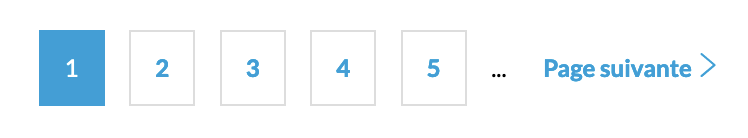Les paginations ne sont pas intégrées avec une balise <nav role="navigation" aria-label="Pagination">.
Présentation de l'information
Recommandation
Utiliser des feuilles de styles pour contrôler la présentation de l'information. Vérifier l'effet de l'agrandissement des tailles des caractères sur la lisibilité. S'assurer que les liens sont correctement identifiables, que la prise de focus est signalée, que l'interlignage est suffisant et donner la possibilité à l'utilisateur de contrôler la justification des textes. S'assurer que les textes cachés sont correctement restitués et que l'information n'est pas donnée uniquement par la forme ou la position d'un élément. S'assurer que les contenus sont lisibles et utilisables dans une fenêtre de largeur réduite. Veiller à ce que l'application de paramètres typographiques n'entraîne pas la perte de contenu ou de fonctionnalité. S'assurer que les contenus qui apparaissent au survol et à la prise de focus puissent être contrôlés par l'utilisateur.
Liens dont la nature n'est pas évidente
Un lien dont la nature n'est pas évidente est un lien qui peut être confondu avec un texte normal lorsqu'il est signalé uniquement par la couleur par certains utilisateurs ne percevant pas ou mal les couleurs.
Les personnes déficientes visuelles peuvent ignorer ces liens puisque ceux-ci ne sont pas visuellement discernables du reste du texte dans lequel ils sont insérés.
Constats sur le site
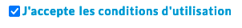Sur la page « Départ en vacances », le lien « les conditions d'utilisation » n'est pas visible, il a la même apparence que le texte environnant.
Visibilité de la prise de focus
Les personnes avec un handicap moteur qui naviguent au clavier peuvent rencontrer des difficultés considérables à utiliser du contenu si elles ne sont pas en mesure de repérer l'indication visuelle du focus et ses déplacements.
Constats sur le site
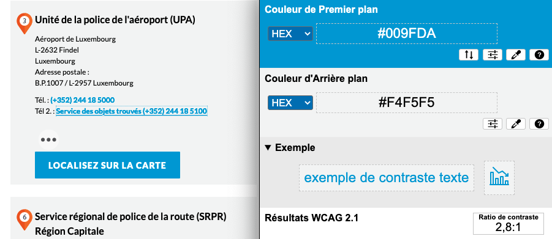Sur la page « trouver un commissariat », la prise de focus dans un bloc ayant un fond gris n'est pas conforme : l'outline sur les liens de téléphone est bleu sur un fond gris avec un contraste de 2.8 au lieu de 3.
Formulaires
Recommandation :
Associer pour chaque formulaire chacun de ses champs à son étiquette, grouper les champs dans des blocs d'informations de même nature, regrouper les items de même nature dans les listes de choix, donner à chaque bouton un intitulé explicite. Vérifier la présence d'aide à la saisie, s'assurer que le contrôle de saisie est accessible et que l'utilisateur peut contrôler les données à caractère financier, juridique ou personnel.
Contrôle de saisie et aide à la saisie
Tous les champs obligatoires doivent être identifiés préalablement à toute validation de l’utilisateur.
Pour les champs qui attendent un format de saisie particulier pour être validés, ce format doit être spécifié à l’utilisateur par un passage de texte visible à proximité du champ. De plus, si l’utilisateur commet une erreur sur ce champ, alors le message d’erreur doit présenter un exemple réel de saisie.
Enfin, les messages d'erreur de saisie des champs de formulaire doivent être liés correctement aux champs en erreur.
Constats sur le site
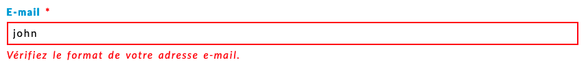Sur le formulaire de contact, le champ email attend un format spécifique qui n'est pas stipulé. De plus, le message d'erreur en cas de format incorrect doit comporter un exemple réel de saisie.
Regroupements de champs et légendes
Les regroupements de champs sont utiles pour ne pas induire certains utilisateurs en erreur, notamment les personnes aveugles.
Les cas typiques de regroupements nécessaires sont les groupes de cases à cocher ou de boutons radio
Il est important d'implémenter les champs dans un regroupement lorsque c'est nécessaire et il est obligatoire de définir une légende à ce regroupement.
Constats sur le site

Dans le formulaire « Départ en vacances », les champs propres au demandeur sont dans un regroupement « votre identité » tandis que les champs correspondants à la personne de confiance sont dans un regroupement nommé « Personne à contacter pendant votre absence ». Le regroupement « Personne à contacter pendant votre absence » est inclus dans celui « votre identité ». Ces 2 regroupements doivent être distincts.
Identification des données attendues
Certains utilisateurs qui ont des troubles d'accès au langage verbal (paralysie cérébrale, aphasie par exemple) auront des difficultés à accéder au sens des termes écrits. Ainsi, pour leur permettre de remplacer les étiquettes présentes dans les formulaires par des étiquettes (verbales ou imagées) qu'ils connaissent, il est nécessaire d'identifier les champs avec un attribut particulier, de sorte qu'une technologie d'assistance pourra réaliser la personnalisation du formulaire nécessaire à l'utilisateur.
L'identification de ces champs permet également aux utilisateurs d'employer des outils pour remplir automatiquement les champs identifiés avec des valeurs de l'utilisateur.
On ne va rechercher que les champs qui attendent une donnée personnelle. Le RGAA demande d'utiliser l'attribut autocomplete et il fournit l'ensemble des valeurs possibles pour l'attribut.
Constats sur le site
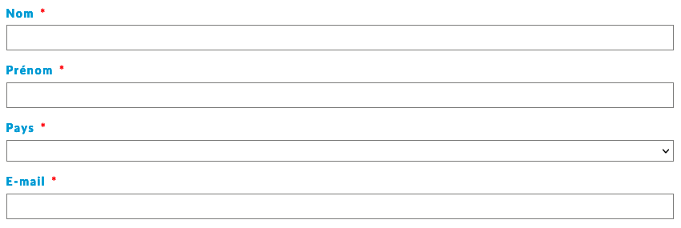Sur la page de contact, les champs « Nom », « Prénom », « Pays » et « E-mail » n'ont pas d'attribut autocomplete.
Navigation
Recommandation :
Faciliter la navigation dans un ensemble de pages par au moins deux systèmes de navigation différents (menu de navigation, plan du site ou moteur de recherche), un fil d'Ariane et l'indication de la page active dans le menu de navigation. Identifier les groupes de liens importants et la zone de contenu et donner la possibilité de les éviter par des liens de navigation interne. S'assurer que l'ordre de tabulation est cohérent et que la page ne comporte pas de piège au clavier. S'assurer que les raccourcis clavier qui utilisent une seule touche sont contrôlables par l'utilisateur.
Landmarks ARIA
Pour fournir des points de repère aux utilisateurs aveugles, il faudra également implémenter les landmarks ARIA sur les balises HTML 5 de la page.
Constats sur le site
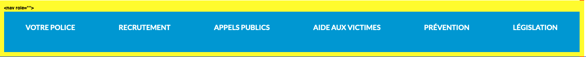Les landmarks du site sont incomplets : la navigation principale n'a pas de role="navigation" aria-label="navigation principale".
Ordre de tabulation
La navigation dans les contenus peut être considérablement compliquée pour les personnes aveugles ou les personnes handicapées motrices qui naviguent au clavier si l'ordre de tabulation n'est pas cohérent.
L'ordre de tabulation est déterminé par l'ordre des éléments dans le code HTML. Il ne suit pas forcément l'ordre de lecture de la page ou de l'écran, mais il doit être cohérent en fonction de la nature des contenus et des fonctionnalités.
Constats sur le site
La bannière de cookies se trouve après l'entête principal. Elle doit être le premier élément du dans l'ordre du code source.